Patrons gratuits
Poches et autres détails de vêtements : patrons gratuits en PDF A4 à l'échelle 1:1. Entrez vos dimensions pour les poches, les épaulettes et les pattes de manches, ou prenez le patron à dimensions fixes de la cartouchière.
Choisissez une famille

Poches plaquées
Créer un patron
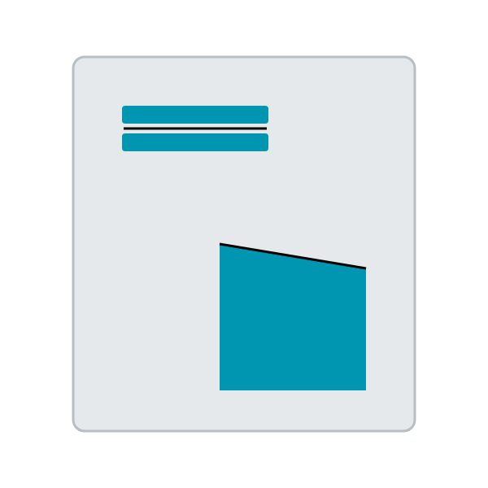
Autres poches
En cours de développement
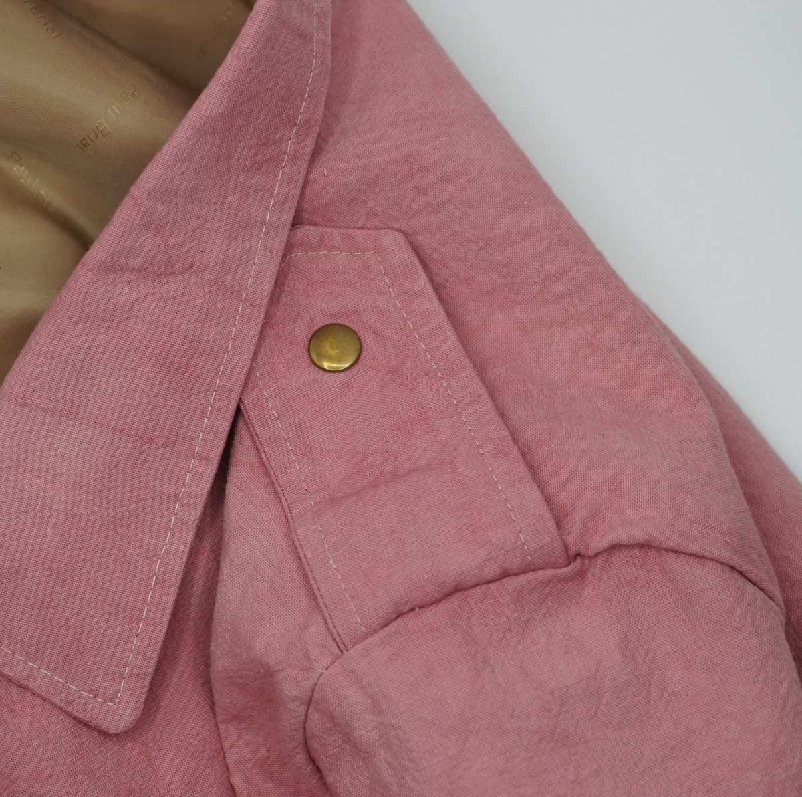
Épaulettes
Créer un patron
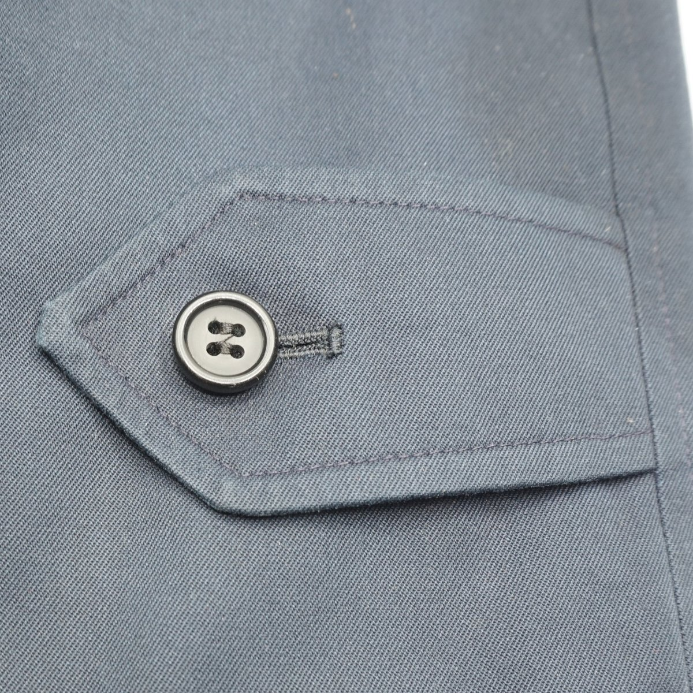
Pattes de manches
Créer un patron
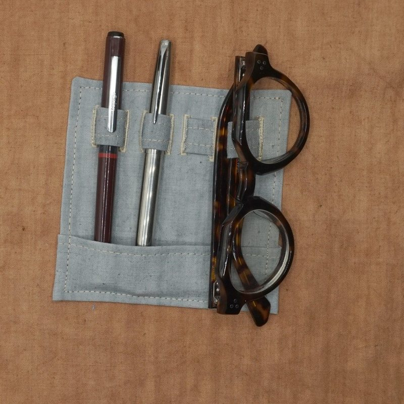
« Cartouchières »
Porte-stylos et lunettes
Voir le patron
Réalisations

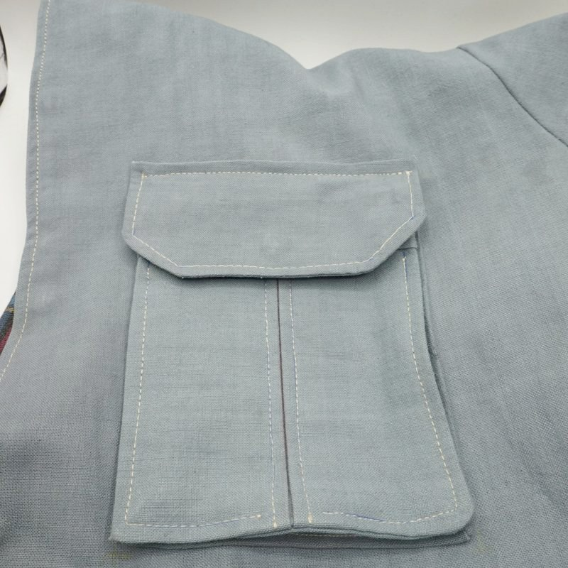


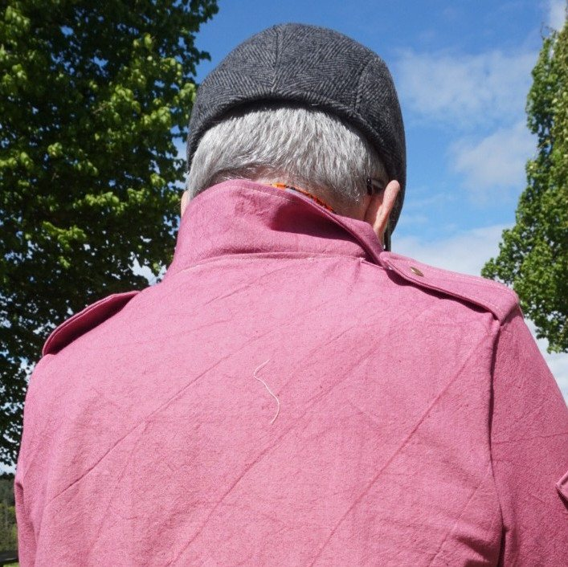
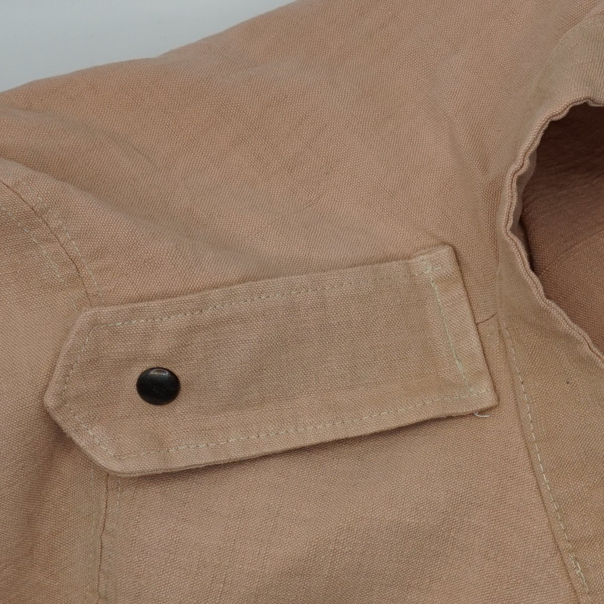
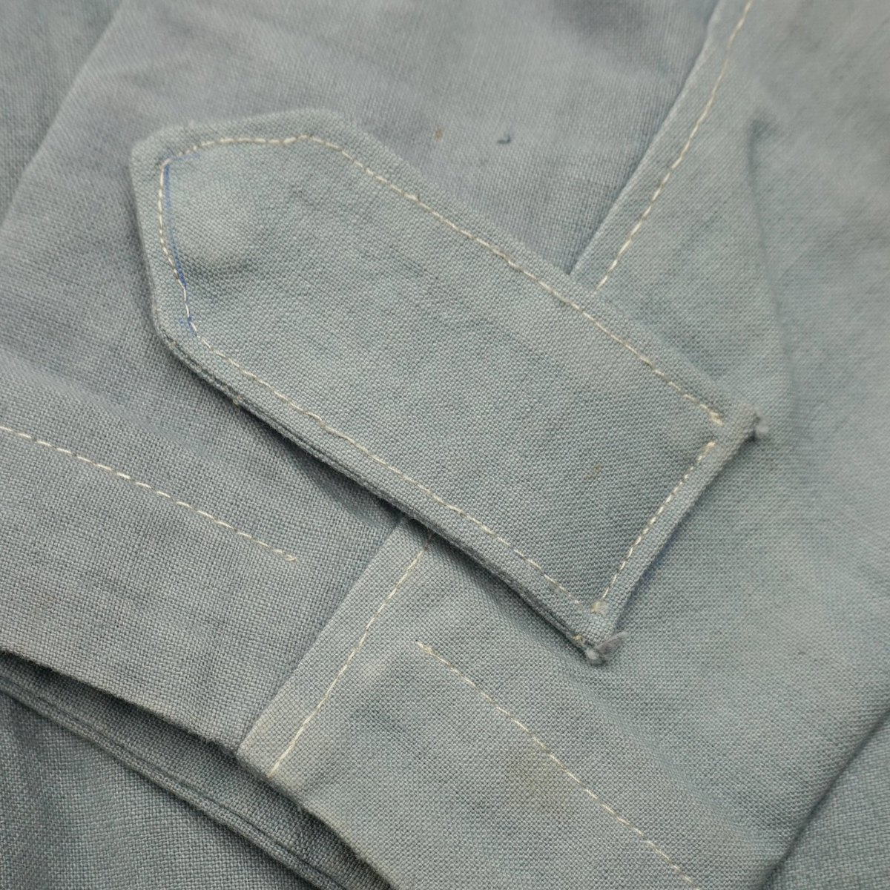
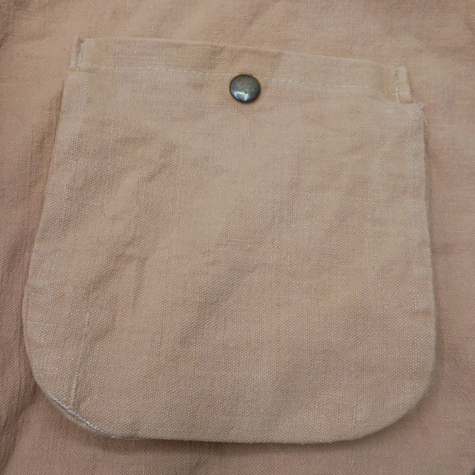

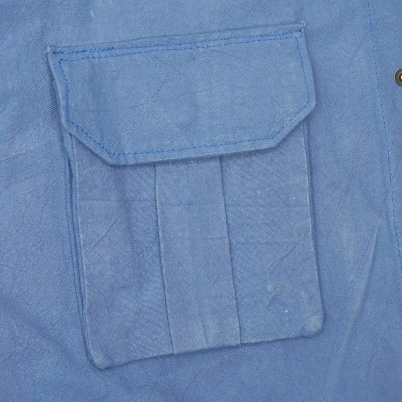

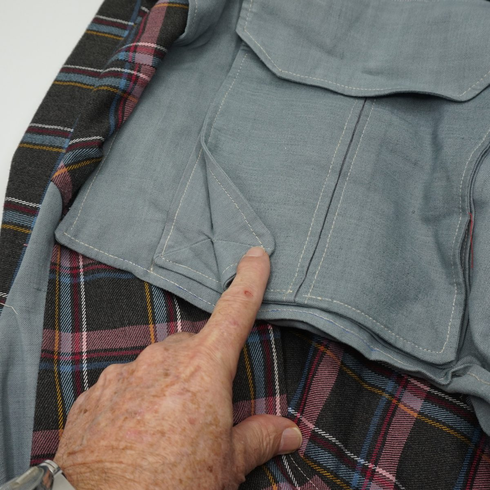
Comment ça marche
- Choisissez une famille de patrons
- Poches plaquées, épaulettes et pattes de manches : choisissez la forme, entrez vos mesures et la marge de couture. Cartouchière : les dimensions sont fixes.
- Téléchargez le PDF et imprimez-le à 100 % en contrôlant le carré de 5 cm (guide)
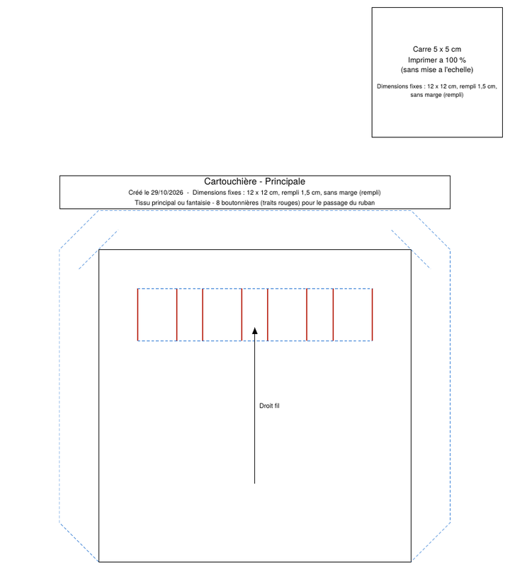
Un mot de l'auteur
Je suis retraité et je me suis mis à la couture sur le tard. Ce site n'a bien sûr pas la prétention d'être exhaustif sur le patronage des poches.
C'est en utilisant les patrons paramétriques gratuits de FreeSewing, puis en patronant avec Seamly2D, un logiciel gratuit de conception de patrons paramétriques, et en réalisant des sahariennes dans des draps métis de ma grand-mère que je me suis amusé à étudier les types de poches plaquées présentés ici.
J'ai l'intention d'ajouter à ce site des patrons de détails vestimentaires utiles pour les vestes, les manteaux…
Si vous avez des demandes particulières dans le champ de ce site, n'hésitez pas à me les faire connaître par le formulaire « Votre avis » (anonyme) ou par courriel : Me contacter